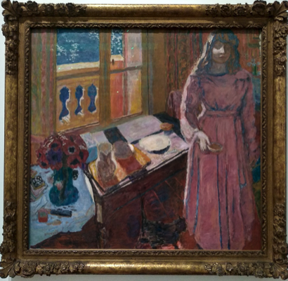

🔊

🥣

Masahisa Fukase
Hyperparking
— Scerbo (@__scerbo__) July 14, 2023
- collected on SR in June 2023 pic.twitter.com/xDFOxPx9fi
visions pic.twitter.com/4DBz8r4gWp
— jas (@trashspaghettio) July 20, 2023
only angels will fabricate the new world pic.twitter.com/gbxc1OEpt2
— ꧁- 𝗉𝖾𝗋𝖾𝗇𝗇𝗂𝖺𝗅𝗌 -꧂ (@perennials_nft) July 6, 2023
I often discover some quite interesting work on Twitter.


I know it’s bad to generalise the art of a whole continent. But I feel African sculpture is so good at expressing that there’s ‘another side to the coin’. Really, we are all in an absurd condition. Lol
I feel like being human has a certain predictability. Despite any self-awareness we may have about how the world works, we still fall into the same tropes. Comics portray people not quite as people, but more like figures in a doll house acting purely as archetypes. This mode of storytelling is so effective imo as, despite any illusion we have about being ‘real’, at the end of the day, we do act a bit like we all live in a big doll house. Roy Lichtenstein points this out beautifully.
Everything Hokusai does has such intense expression - he has perfect intuition about what makes things fascinating, beautiful, and amusing.

This is just pure leisure - life is good and beautiful. Like the start of a holiday. 😂 Renoir captures this feeling perfectly.

Catholic art is so potent. Consistently impressive depictions of majesty and grace.

Giacometti makes me feel like I’m in some kind of Yves Tanguy abstract purgatory wasteland. But one that’s misty and industrial.

I grew up with a Dachshund. Hockney rightly portrays them as warm, ember-like, and soft. They almost melt into one another. And it’s all so intimate - his whole series ‘Dog Days’ really does capture what it's like to have them around.